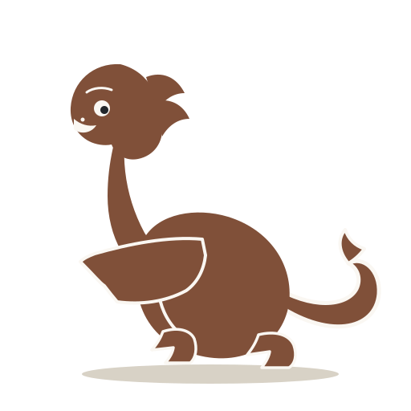

Блок для верху вэб-галоўнай: ідэнтыфікацыя прадукта → адно абяцанне → дзейныя магчымасці чыпаў → адзін галоўны CTA. Прынцыпы канала: вэб — прэв'ю прагулкі, не другі прадукт; проджы працягу ў дадатку — адзін блок унізе. Радкі — даслоўна са слоўніка (web.ui.*, native.chrome.*); загаловак — аўтарскі.
a11ea86) · канон G06.07 · слоўнік G25.02 · пазы G25.03 · патрабаванні вэб-канала: 09 §8 (8 моў), G10.02 (вэб-аўдыёверсія). Статус: канцэпт; сілуэт горада — заглушка, рэальная ілюстрацыя патрабуе асетаў з правамі (§7 ліста).Выберы прагулку і пачуй гісторыю на месцы — тэкст і аўдыё проста ў браўзеры, без акаўнта. Поўная версія — у дадатку: GPS-аўтазапуск, офлайн, поўныя маршруты.

web.ui.calmOfferText; тэза «без акаўнта» — з web.ui.privacyWeb («Бясплатны вэб-канал не збірае акаўнтаў»). Чыпы (на гэтай шырыні ≤ 2): web.ui.audioAndText, native.chrome.access.free. Факт васьмі UI-моваў (R11: be en uk de es fr cs sv) на блок не выносіцца — поўны пералік жыве на старонцы гіда (web.ui.languagesLine). CTA: native.chrome.guidesLink і web.ui.calmOfferCta. Рэпліка дракона — даслоўна брыф §Сутнасць.Pick a walk and hear the story on the spot — text and audio right in the browser, no account. The full version — in the app: GPS autoplay, offline, complete routes.
web.ui.calmOfferText з translations/en.json; CTA — guidesLink/calmOfferCta. Загаловак, увядзінны сказ і рэпліка дракона — аўтарскі пераклад з пазнакай; факт васьмі UI-моваў (R11) на блок не выносіцца — гл. be-подпіс.Выберы прагулку і пачуй гісторыю на месцы. Тэкст і аўдыё — проста ў браўзеры, без акаўнта. Поўная версія — у дадатку.
Pick a walk and hear the story on the spot. Text and audio right in the browser, no account. The full version — in the app.